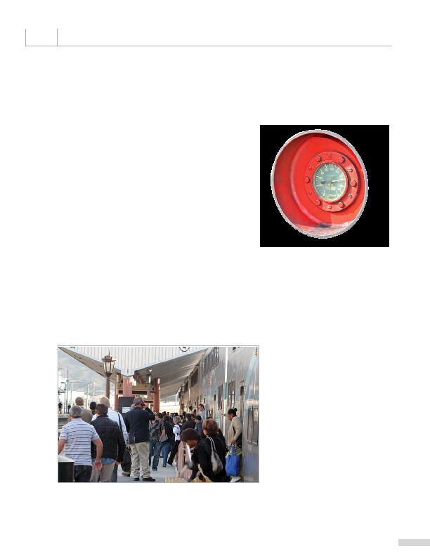

|

the agency to save 860,000 gallons of fuel. Train and engine crews shut down the Head End Power (HEP) engines, the components that power the car lights and air conditioners, when trains are not in service. When train sets are stored overnight and on weekends, the locomotive main and HEP engines are shut off and the train set is connected to Wayside Power, which is power supplied by the local electric utility, instead of using power supplied by the HEP engines. our impact. For example, in April 2012, Metrolink put into practice a pilot plug-in program at its Central Maintenance Facility in Los Angeles to reduce electrical power consumption and emissions generated by locomotive engines. The plug-in power the agency uses allows trains to operate from ground power during a part of Metrolink's daily servicing and maintenance routine instead of relying solely on locomotive power. transportation: to go green, but it has also encouraged its employees to be environmentally friendly from day one. As of 2012, 66 percent of Metrolink employees ride public transportation to work, compared to the 2010 national average of 5 percent. |